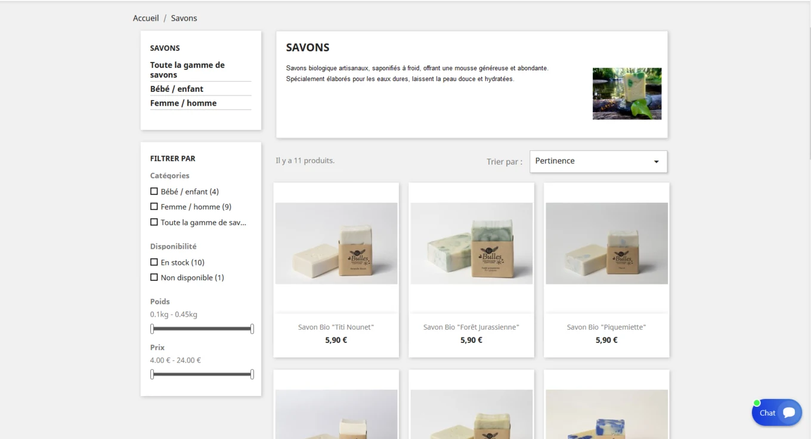
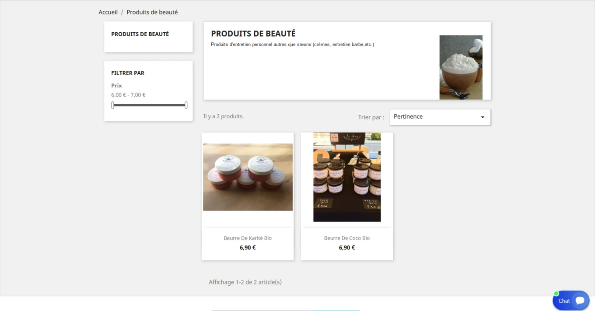
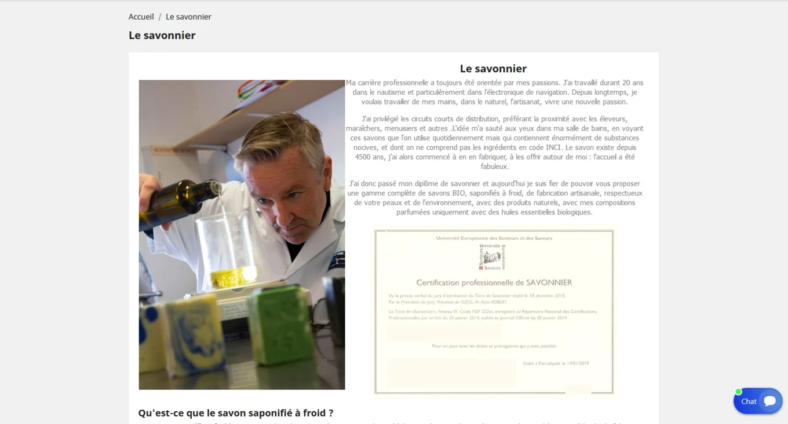
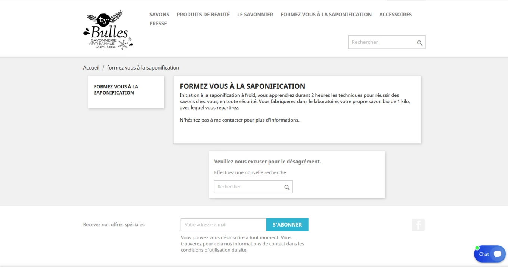
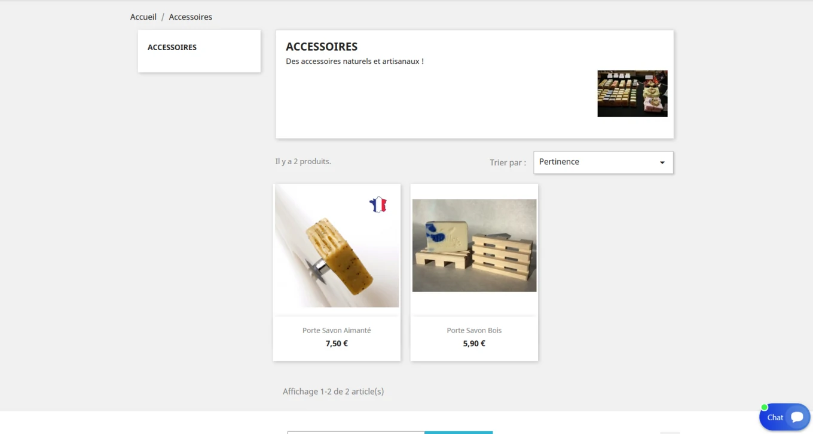
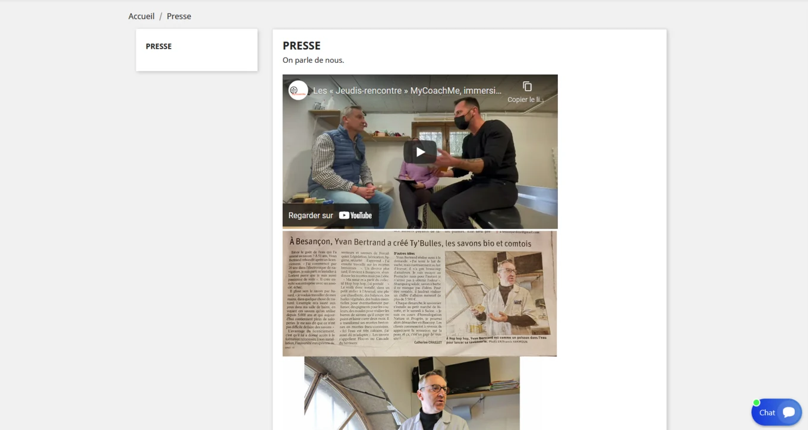

Développement web · Janvier à février 2022
Stage de développement web chez Ty’bulles
Un stage sur un site marchand PrestaShop existant. J’ai travaillé sur la navigation et la présentation des pages, l’intégration d’un chatbot et le référencement naturel.
Galerie des réalisations













Contexte
Ty’bulles disposait d’un site de commerce en ligne. Il s’agissait d’identifier les pages à améliorer et de faire évoluer le site selon les besoins de l’entreprise, dans le cadre de sa structure existante.
Missions réalisées
-
Analyse du site
Observation du fonctionnement du site et des pages à faire évoluer.
-
Évolutions PrestaShop
Modification des pages du site marchand et amélioration du parcours de navigation.
-
Intégration du chatbot
Création et intégration d’un chatbot sur le site pour orienter les visiteurs.
-
Référencement
Optimisation des contenus et des éléments utiles à la visibilité du site.